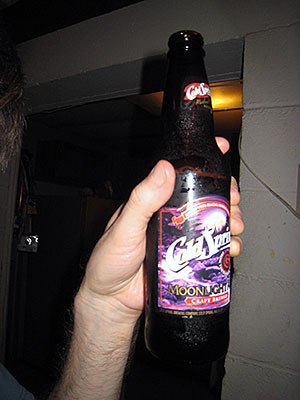

The Saga(?) of the Moonlight Ale
One afternoon, on the way home from "work", I stopped by a liquor store. Scanning the prices, I didn't quite see what I was looking for (namely, a sweet German-or-similar 6-pack for less than $7.00). There was, however, a craft brew from the very local Cold Spring Brewery (about 10 miles from where I'm sitting right now).
And when I saw the price as $6.99, the letters FTW positively sprang to mind :D Anyhoo, I scanned the 3 varietes beckoning me this day...
- Moonlight Ale
- Honey Weiss
- Ebony Wheat
... and selected "Moonlight Ale". A few hours later -- well chilled -- I opened a bottle. And let me just say: I think it's the closest to "love at first sip" that I've ever experienced :) As I proclaimed on Twitter that evening,
An awesome dark, fruity taste
'Nuff said.
Then, I recalled that it was the last 6-pack on the shelf. Also, the cashier mentioned that Cold Spring was going to discontinue one of those 3 varieties. A few days later, on the spur of the moment, I gave the Cold Spring Brewery a call. And I was assured by a friendly voice that the Moonlight Ale would "be just fine".
However, the next time I stopped by the store there was no Moonlight Ale.... Instead, I got the "Honey Weiss", which was good but not remarkable. And the next week (a.k.a today), I tried the "Ebony Wheat". Survey Says: seems (implausibly) not fresh. And while overall not too bad, it's definitely nothing to seek out.
And so the question remains: Is the discontinued beer indeed Moonlight Ale? I may not have an answer for a while... But hopefully in the not-too-distant future I'll find that a new stream of Moonlight Ale is headed my way :) If so, the probable reunion may look something like this:
